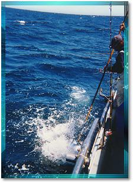

2000
|
Date: Saturday, November 18, 2000 at 08:51:43 The Sea Stag III is finished Albacore fishing for this year. The Sea Stag III will be fishing for Rocked on future trips. The last three rocked trips have returned with limits of nice size cod. For reservations and more information please call 831 427-0230. Date: Sunday, November 5, 2000 at 21:23:10 Current Report: Sunday the Sea Stag III left F dock for an Albacore trip with 9 fisherman.They caught 12 Albacore off cypress point ranging between 25 and 40 pounds.All the fish were caught on live bait.For reservations and details call 831 427-0230. Date: Wednesday, October 25, 2000 at 21:23:55 Current Report: The Sea Stag III has not Albacore fished for a few days because of bad weather. Tuesday their was a report of a large school of Albacore off point Sur. The Sea Stag III will start fishing Friday, October 27th their. The boat also has an Albacore trip Sunday the 29th. For reservations and more information please call 831 427-0230. Date: Sunday, October 15, 2000 at 19:50:21 Current Report: The Sea Stag III left the Santa Cruz Harbor Sunday morning with 8 passengers on board for an Albacore trip. Their journey took them to the weather boey.The first stop they caught 15 Albacore on a one hour live bait stop. The fish ranged from 20 to 35 pounds. It was a little choppy with north west wind but the fish are close to home. The boat returned late afternoon with 34 Albacore. The next trip will be Wednesday, October 18th. For reservations for this day or any upcoming date please call 831 427-0230. Date: Saturday, October 14, 2000 at 08:31:28 Current Report: The Sea Stag III Friday, October 13th was fishing 29 miles south west of Santa Cruz. The 13 fisherman caught 28 Albacore ranging in size from 20 to 35 pounds. The fish were caught mainly on live bait and fish traps. The next scheduled trips are Sunday, Wednesday and Friday. If you don't see a current report Please call 831 427-0230 for a current update, reservations and prices. Date: Wednesday, October 4, 2000 at 22:36:57 Current Report: The Sea Stag III Wednesday was fishing 29 miles south west of Santa Cruz. The 13 passengers caught 31 Albacore ranging in size from 25 to 30 pounds. The fish were caught mainly on live bait and fish traps. The weather was calm. The next scheduled trips are Friday.and Saturday Please call 831 427-0230 for reservations and a more current. Weather and fish report. Date: Tuesday, October 3, 2000 at 11:21:26 Current Report: The Sea Stag III caught 23 Albacore Sunday, October 1st for 11 passengers. The fish ranged between 25 and 40 pounds. They were caught 22 miles of Santa Cruz on fish traps and live bait. For reservation and more details please call 831 427-0230. Date: Friday, September 29, 2000 at 17:31:26 Current Report: Just 22 miles out of Santa Cruz the Sea Stag III with 8 fisherman caught 32 Albacore. The fish were caught mainly on live bait and fish traps..The Albacore averaged 25 pounds, The next trips will be Wednesday, Friday and Saturday. For reservations and more details call 831 427-0230. Date: Monday, September 25, 2000 at 21:01:05 Current Report: The Sea Stag III Sunday was fishing 32 miles south west of Santa Cruz. They caught 20 Albacore ranging in size from 20 to 40 pounds. The fish were caught mainly on live bait and fish traps in the afternoon. The next scheduled trips are Wednesday and Friday. Please call 831 427-0230 for reservations and more details. Date: Saturday, September 23, 2000 at 08:29:59 Current Report: Friday, September 22 the Sea Stag III caught 23 Albacore for 13 passengers. Fishing off Point Sur in flat calm weather fish averaged 30 pounds with a few in the 40 pound range. Most of the fish were caught on live bait and fish traps. The next trip will be on Wednesday, September the 27th and Friday the 29th. The Sea Stag is booking trips now. Please call 831 427-0230 for reservations and more details Date: Monday, September 18, 2000 at 04:14:54 Current Report: The Sea Stag III and the Stagnaro II returned early Saturday with limits of assorted Rockcod..They were fishing in 240 feet of water off Greyhound Rock. The Stagnaro II will be booking Rockcod trips this week.Sea Stag III has Albacore Trips going Wednesday, Friday and Sunday. For reservations and more details call 831 427-0230 or 427-2334. Date: Friday, September 15, 2000 at 08:54:59 Current Report: Wednesday the Sea Stag III was fishing 32 miles out of Santa Cruz just east of the 601.The 11 passengers caught 18 Albacore with a average weight of 25 pounds.Most of the fish were caught on live bait in the morning.The next trip will be Wednesday the 20th.For reservations please call 831 427-0230. Date: Monday, September 11, 2000 at 21:43:48 Current Report: The Seastag III left the Santa Cruz Harbor on an albacor fishing trip with ten fisherman at 4:00am Saturday, September 9th. They were fishing off Cypress Point. It was a private charter. They caught twenty albacor with an average size of 25 pounds. Catch the next Seastag III albacor fishing trip on Wednesday, September 13th, leaving Santa Cruz Harbor "F" Dock at 4:00am. Please call for reservations: 831/427-0230. Date: Sunday, September 3, 2000 at 08:33:31 Current Report: Saturday August 2 the Sea Stag III caught 30 Albacore for 12 passengers.Fishing off Point Sur in flat calm weather fish averaged 30 pounds with a few in the 40 pound range.The next trip will be on Wednesday August the 6th and Friday the 8th.The Sea Stag is booked weekends until the end of September.Please call 831 427-0230 for reservations and more details. Date: Friday, September 1, 2000 at 09:10:00 Current Report: On Wednesday August 30th the Sea Stag III caught 29 Albacore 49 miles out of Santa Cruz near the 601 for 9 passengers.Fish averaged 25 pounds with a few 35 pounders.Over half the Albacore were caught on live bait and fish traps.Thursday there were reports of good scores of fish off Cypress Point.Friday the Sea Stag will start fishing their.Starting Monday September 4th the boat still has room.Trips are 12 hours and cost 140 dollars with out tackle and 150 with tackle. For reservations and more information please call 831 427-0230. Date: Sunday, August 27, 2000 at 08:16:22 Current Report: The Sea Stag III is a forty three foot, twin engine sportfisher built by Delta Marine.She cruises at a comfortable 16 knots, powered by two 320HP catapillar diesel engines.The Sea Stag will be booking Albacore trips Wed. Fri. and Sat.The boat is located on F dock in the lower Santa Cruz Harbor off Seabright Avenue.Please call 831 427-0230 for reservations or more information. Date: Sunday, August 27, 2000 at 08:12:02 Current Report: The Sera Stag III is a forty three foot, twin engine sportfisher built by Delta Marine.She cruises at a comfortable 16 knots, powered by two 320HP catapillar diesel engines.The Sea Stag will be booking Albacore trips Wed. Fri. and Sat.The boat is located on F dock in the lower Santa Cruz Harbor off Seabright Avenue.Please call 831 427-0230 for reservations or more information. Date: Wednesday, August 23, 2000 at 19:44:48 Current Report: Wednesday the Stagnaro II left the Santa Cruz Wharf with 14 passengers fishing for Rockcod.The boat returned with limits bye 1pm.The weather was great wuth flat calm seas.The Stagnaro II will be fishing for Rockcod the next two days.For reservations call 831 427-2334. Date: Wednesday, August 23, 2000 at 19:41:05 Current Report: Wednesday the Stagnaro II left the Santa Cruz Wharf with 14 passengers fishing for Rockcod.The boat returned with limits bye 1pm.The weather was great wuth flat calm seas.The Stagnaro II will be fishing for Rockcod the next two days.For reservations call 831 427-2334. Date: Wednesday, August 23, 2000 at 19:27:09 Current Report: On Monday August 21 the Sea Stag III caught 8 Salmon for 8 passengers off Santa Cruz Lighthouse.Tuesdays trip went for Rockcod and returned with limits for everyone on board.The next trip will be for Albacore on Friday August 25th departing from F dock in the Santa Cruz Harbor.For reservations or more information call 831 427-0230 or 427-2334. Date: Wednesday, August 23, 2000 at 19:25:59 Current Report: On Monday August 21 the Sea Stag III caught 8 Salmon for 8 passengers off Santa Cruz Lighthouse.Tuesday trip went for Rockcod and returned with limits for everyone on board.The next trip will be for Albacore on Friday August 25th departing from F dock in the Santa Cruz Harbor.For reservations or more information call 831 427-0230 or 427-2334. Date: Friday, August 4, 2000 at 19:42:34 Current Report: The Stagnaro II Friday departed the Santa Cruz Wharf at 7am with 30 passengers for rockcod.The boat returned at 1:30pm with limits of large chiles.They were fishing in 280 feet of water off Davenport Jason the Stagnaro 2 deckhand reported good weather and great fishing.For reservations call 831 427-2334 or 427-0230. Date: Friday, August 4, 2000 at 19:14:51 Current Report: The Sea Stag III left F dock at 4am for its first Albacore trip Friday August 4th.Nine passengers caught 20 Albacore weighing between 10 and 30 pounds.The boat was fishing 45 miles south west of Santa Cruz in flat calm weather.For reservations and more information call 831 427-0230. Date: Friday, August 4, 2000 at 08:43:15 Current Report: The Sea Stag III Thursday August 3rd caught limits of canarys and bolinas for 26 passengers.The boat was fishing off natural bridges in 80 feet of water.For reservations call 831 427-0230 or 427-2334. Date: Saturday, July 29, 2000 at 07:35:47 Current Report: On Friday July 28th the Sea Stag III 12 passengers caught 13 Salmon off Lighthouse Point in 90 feet of water.For reservations or more details call 831 427-0230 or 427-2334. Date: Friday, July 28, 2000 at 08:32:40 Current Report: The Sea Stag III 16 passengers caught 13 Salmon off Lighthouse Point in 80 feet of water Tuesday July 25th Fish ranged from 10 to 20 pounds.For reservations or more information call 831 427-0230 or 427-2334 Date: Saturday, July 22, 2000 at 03:27:03 Current Report: On Wednesday July 26th the Sea Stag III will run its first Albacore trip.They will depart from dock F in the Santa Cuz Harbor at 4am and return around 4pm.The trips will cost 140 dollars each.For reservations or more information call 831 427-0230. Date: Tuesday, July 18, 2000 at 19:34:22 Current Report: Sunday July 16th the Sea Stag III was mooching off the Pajaro river with 13 passengers on board.They caught 13 Salmon in 80 feet of water.The fishing has slowed down a little but we are getting a few very large Salmon. Date: Sunday, July 9, 2000 at 19:28:41 Current Report: Salmon fishing continues to be good.On Sunday July 9th the Stagnaro II was mooching off Moss Landing with 30 passengers on board.They caught 32 Salmon ranging in weight from 10-22 pounds.Fish were caught between 40 and 90 feet.For reservations call 831 427-2334 or 427-0230. Date: Thursday, July 6, 2000 at 20:35:21 Current Report: The Sea Stag III was fishing off the soldiers ciub in a 150 feet of water Thursday July 6th.The boat had 18 passengers and they caught 30 Salmon between 10-25 pounds at 80 feet.For reservations or more information call 831 427-0230. Date: Wednesday, June 28, 2000 at 19:53:29 Current Report: Salmon fishing continues to be excellent with fish ranging from 13-23 pounds.Wednesdays the Sea Stag III was fishing off Mulligan Hill in 190 feet and caught the majority of fish at 150 feet.Joey Stagnaro said the fish averaged 15 pounds.The Sea Stag III had limits for 23 passangers and had good weather Wednesday.For reservations or more information call 831 427-0230 or 427-2334. Date: Monday, June 26, 2000 at 21:25:49 Current Report: The Stagnaro 2 returned Monday to the Santa Cruz Wharf bye 11:30 with limits for 18 passangers.The Salmon ranged in size from 10-20 pounds.Just 2 miles from the Santa Cruz Harbor the fish were caught in 80 to 120 feet off water.For reservations or more information please call (831) 427-2334 or 427-0230. Date: Tuesday, June 13, 2000 at 09:14:47 Current Report: Salmon Fishing upgraded to excellent: After a very up and down three weeks the salmon fishing has picked up again. Saturdays fishing produced over a fish per rod. We should of had limits but the northwest wind sent us home early. Sundays bite was off quite a bit with only a few fish reported. On sunday mid day there was a report of fish in Moss Landing.Mondays trip produced 36 fish for 20 anglers we should of limited but lost a lot of fish due to beginning fisherman.Jason Trusedale deckhand of the Stagnaro 2 reported "the fishing was wide open but the beginners were not paying attention".We have room all week but friday is filling fast.Saturday is full and sun (fathers day has plenty of spots as of now!) Please call 831-427-2334 or 831 427-0230 for reservations Date: Wednesday, May 31, 2000 at 13:21:33 Current Report: Well we had to travel a ways to find them but salmon fishing seems to be back on track! On sat 5/27 the Sea Stag reported limits for 18. On sunday Joey Stagnaro number one deckhand reported 35 fish for 20 anglers. Memorial day produced catches of 33 salmon for 20 fishermen. The fishing was described as wide open in the afternoon on all three days.We were fishing between new years and franklin pt. in 270 feet. The fish were being caught at the surface to 40 ft down. We are full for Saturday and Sun and have room during the weekdays. Please call 831- 427-2334 or 427-0230 for rsvp or info. Date: Friday, May 26, 2000 at 09:21:42 Current Report: After being spoiled with limits or near limits for the past 3 weeks the salmon fishing has slowed. Some say its the full moon others say the water is starting to warm up. We have been fishing between the soquel hole and soldiers club.The fish have been ranging from 12-18 pounds. We have trips scheduled all memorial day weekend please call 831-427-2334 or 427-0230 for reservations Date: Wednesday, May 17, 2000 at 10:23:04 Current Report: Salmon fishing continues to be excellent with fish ranging from 10-16 pounds. We have been fishing between Santa Cruz and Moss Landing. Sunday boats were hampered with a south swell and southerly winds but still managed to score 1 to 1.5 fish per rod. We were unable to fish monday due to poor conditions. Tuesday the Sea Stag lll had limits of cod for a private charter of 19 anglers. Space is available thursday and friday for salmon but the weekend is already full. Make your rsvp early for memorial day wknd. Call 831 427-2334 or 831 427-0230 Date: Tuesday, May 9, 2000 at 09:09:01 Current Report: EARLY LIMITS The salmon fishing continues to be excellent! Ken Stagnaro reported early limits all week long fishing anywhere from the Soquel hole to the soldiers club. The fish are hitting anywhere from 30 feet to 100 feet in depth.Size range has been from 10 -18 pounds. For more info and reservations call us at 427-2334 or 427-0230 Date: Tuesday, May 2, 2000 at 08:57:41 Current Report: Salmon fishing continues to be HOT! HOT! HOT! On Saturday april 29th the sea stag 3 had limits by 12 noon for 26 passengers fishing off the soldiers club. Number one deckhand Joe Stagnaro reported the fish were being caught right at the surface to 100 feet down. Most of the fish were in the 12 to 16 pound range with a few over twenty pounds. Jason Truesdale deckhand on the Stagnaro 2 reported near limits for 36 passengers fishing the same area. Sundays action was even better with the Stagnaro 2 limiting out by 1100am and the Sea stag 3 by 1130am. Boats are scheduled to run all week with space available. Make your reservations early for the weekends as space is limited. For reservations call 831-427-2334 or 831-427-0230 Date: Monday, April 24, 2000 at 21:11:18 Current Report: Salmon fishing continues to be excellent with limits or near limits for both boats. Fish are being caught between 75 and 150 feet between soquel hole and Moss Landing.the size range is from 10 pounds to 16 pounds. Boats are leaving daily at 6 am check in time is at 5:30am reservations are required please call 427-2334 for more details. Reminder cod fishing will open may 1st |
|
|
|
|
Copyright © 2000-2007 Stagnaros. All Rights Reserved
...R & D Web...Dynamic Website Creation